Триатлонные старты, горные серпантины или грейвел заезды по
живописным маршрутам – нужно только определиться с выбором
велосипеда и отправиться в путь.
«Катайся много или мало, долго или коротко, как хочешь - но
катайся»
Эдди Меркс
Велогонщик
Шоссе
На шоссейном велосипеде можно ездить по асфальту на разных
градиентах: будь то горы или равнины. Гонки проходят в
командном пелотоне, но тренироваться можно и самостоятельно.
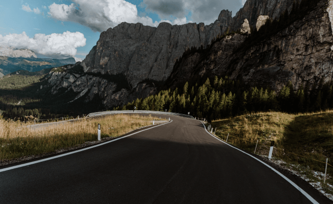
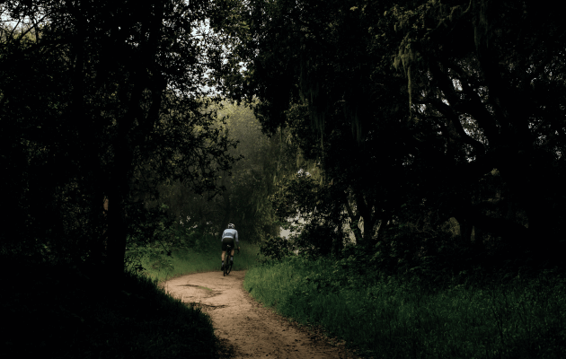
Велосипеды
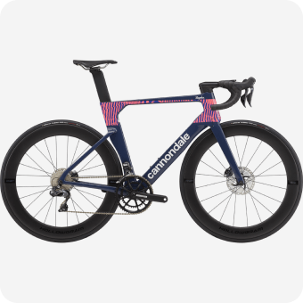
Cervelo Caledonia-5
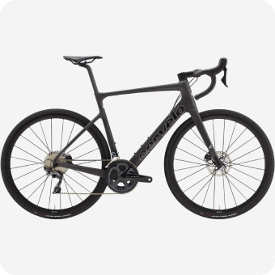
Cannondale Systemsix Himod
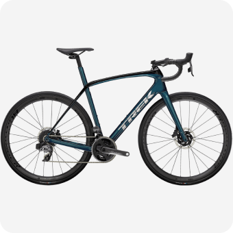
Trek Domane SL-7
Грэвел
Грэвел похож на шоссейный велосипед, но конструкция рамы
немного отличается, и на нём стоят более широкие покрышки, всё
для того чтобы проехать по лёгкому бездорожью.
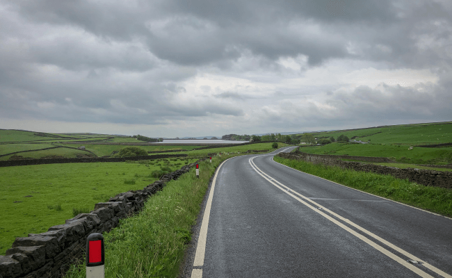
Велосипеды
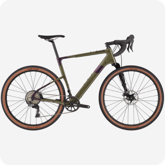
Cervelo Aspero GRX 810
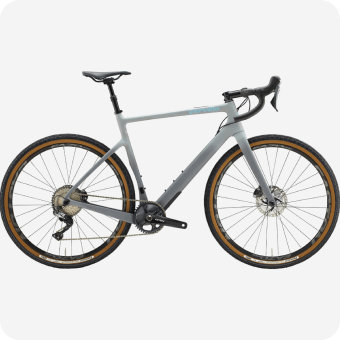
Specialized S-Works Diverge
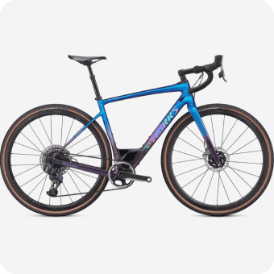
Cannondale Topstone Lefty 3
ТТ
ТТ — это велосипед для триатлона или раздельного старта,
гооняют на таком велике только по равнинному асфальту, велик
очень быстрые и аэродинамичный.
Велосипеды
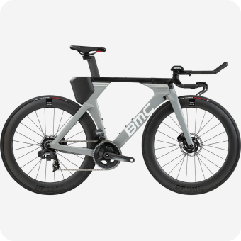
Specialized S-Works Shiv
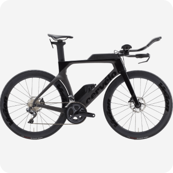
BMC Timemachine 01 ONE
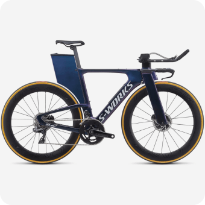
Cervelo P-Series
Тренировки
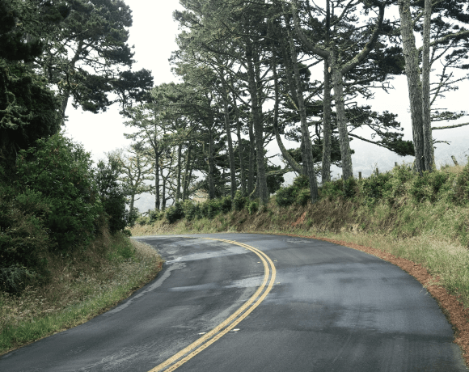
Чтобы найти маршрут для тренировки можно воспользоваться сервисом
Komoot, а записать эти тренировки поможет приложение Strava, а также
это приложение позволит построить тренировочный план.